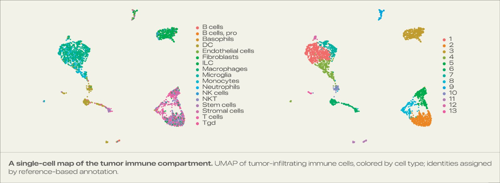
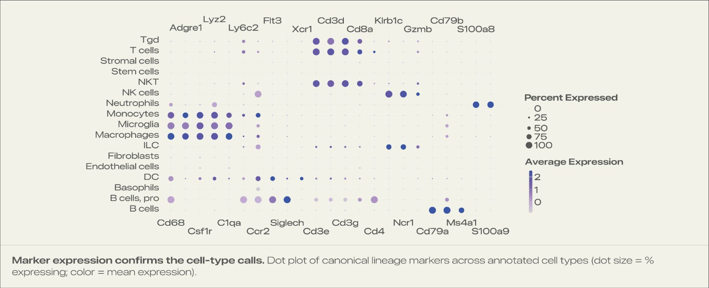
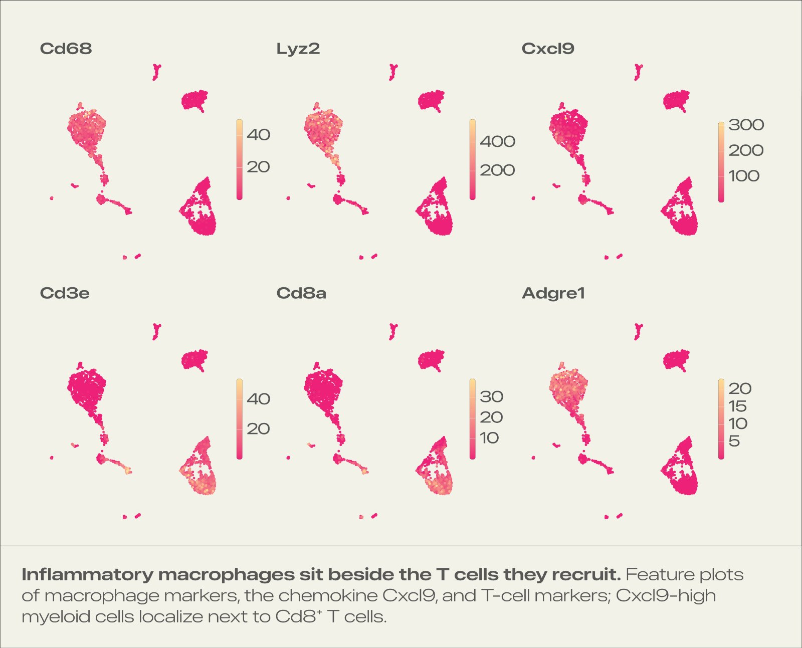
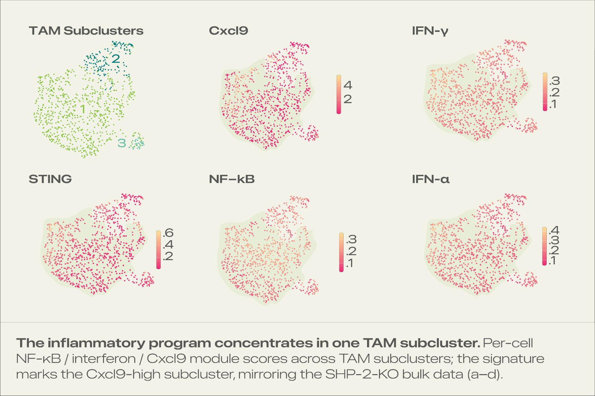

Computational Research
most of my lab work happens at the bench, but a meaningful fraction of it never touches a pipette. across four independent pipelines, over 11,000 lines of R, i've built the computational side of this research: differential expression analysis with DESeq2, single-cell clustering and annotation with Seurat, pathway enrichment through GSEA and fgsea, and transcription-factor activity inference with VIPER and DoRothEA.
performed differential expression analysis using DESeq2 to identify significantly up- and down-regulated genes from raw count matrices. conducted single-cell clustering, annotation, and trajectory analysis using Seurat. ran gene set enrichment analysis (GSEA/fgsea) against curated pathway databases to interpret differential expression results at the pathway level. inferred transcription-factor activity using VIPER and the DoRothEA regulon database. the analysis shown below reanalyzes public single-cell RNA-seq data from a BRAFV600E melanoma model (NCBI GEO: GSE162467).
set.seed(42)
vcl <- RunUMAP(vcl, dims = 1:n_pcs, verbose = FALSE)
immgen_ref <- celldex::ImmGenData()
singler_results <- SingleR(
test = GetAssayData(vcl, assay = "SCT",
layer = "data"),
ref = immgen_ref,
labels = immgen_ref$label.main,
de.method = "wilcox"
)
vcl$SingleR_main <- singler_results$labels
p_f1a <- DimPlot(vcl, group.by = "SingleR_main",
label = TRUE, repel = TRUE)
p_f1b <- DimPlot(vcl, group.by = "seurat_clusters",
label = TRUE, repel = TRUE)
ggsave(here::here("figures", "F1_VCL_UMAP_CellTypes.pdf"),
p_f1a | p_f1b, width = 14, height = 6)







